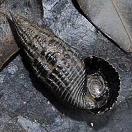
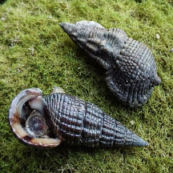
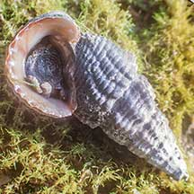
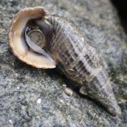

|
|
| shelled snails text index | photo index |
| Phylum Mollusca > Class Gastropoda > Family Potamididae |
| Belitong
snail Terebralia sulcata Family Potamididae updated Sep 2020 Where seen? This chubby snail is sometimes seen in our mangroves, attached to trees and hard surfaces, or littering the ground near the high water mark. Sometimes found in groups of several individuals. Features: 3.5- 4cm long. Shell thick with prominent ribs. Shell opening wide often with a thick, flared lip. It has a distinctive shell opening at the tip, the inhalant siphonal canal called the peristome. Sometimes confused with the Red chut-chut and Black chut-chut. More on how to tell these snails apart. |
 Pulau Semakau, Mar 05 |
 Unlike the similarly shaped Chut-chut, the Belitong has a distinctive peristome Berlayar Creek, Mar 09 |
 Berlayar Creek, Mar 09 |
| Human uses: It is extensively collected for food and the shell used to produce lime in the Philippines. |
| Belitong snails on Singapore shores |
On wildsingapore
flickr
|
| Other sightings on Singapore shores |
 Seringat-Kias mangrove lagoon, Sep 25 Photo shared by Richard Kuah on facebook. |
 Pulau Hantu, Apr 21 Photo shared by Vincent Choo on facebook. |
 Pulau Sudong, Dec 09 Photo shared by Ivan Kwan on his flickr. |
Links
References
|